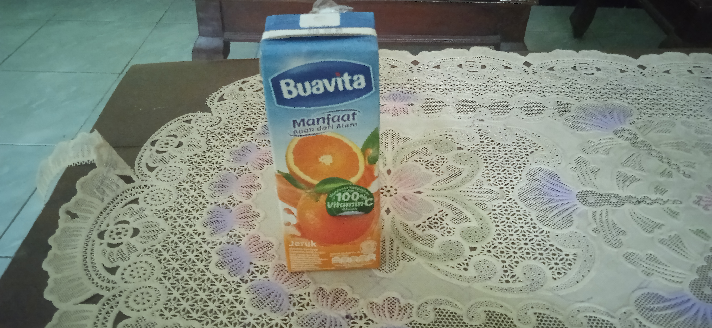
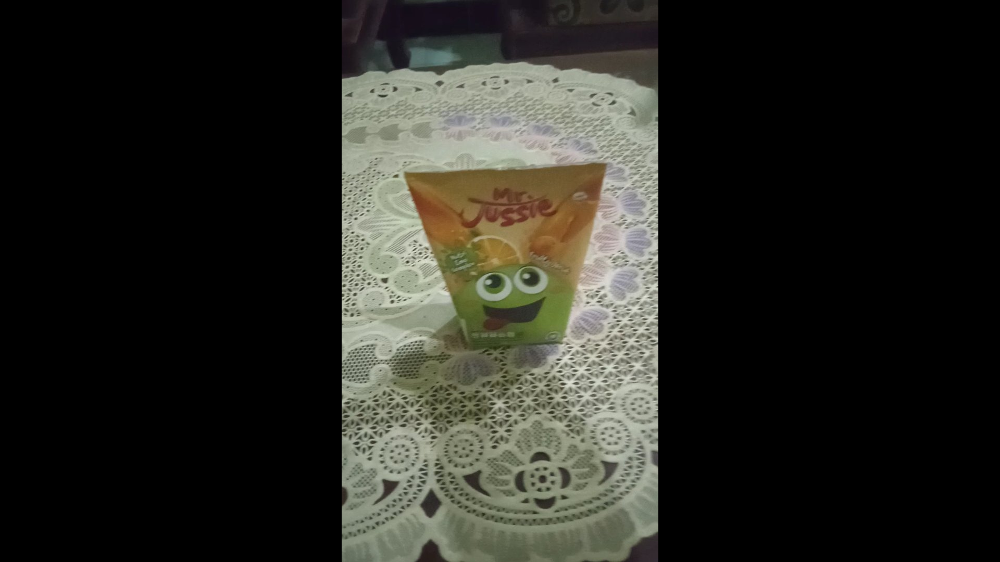
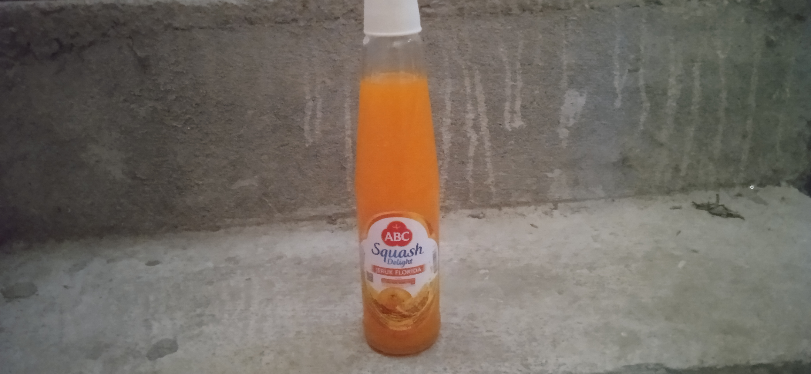

Uji persentase vitamin C dan pemanis buatan pada minuman
Nama:Muhammad eksa arifa
Kelas:9A
No:23
Assalamualaikum wr wb,kali ini saya akan menguji seberapa banyak kandungan vitamin c dan juga pemanis buatan pada minuman.Minuman yang saya uji kali ini adalah buahvita,mr.jussie,dan sirup ABC.Mulai dari...
1.Buahvita

Setelah saya mencicipi buahvita saya menyimpulkan bahwa buahvita memiliki kandungan vitamin c yang tinggi,dan memiliki sedikit pemanis buatan.
2.Mr.Jussie

mempunyai sedikit kandungan vitamin C dan mempunyai pemanis buatan dengan jumlah sedang.
3.Sirup ABC

Mempunyai Kandungan Vitamin C rendah dan pemanis buatan yang tinggi.
oke sekian teks laporan percobaan dari saya,wassalamualaikum wr wb.
Font yang digunakan di sini: Poppins
Warna navbar dan footer: Crimson
warna tulisan: black/#000
warna border: #808080